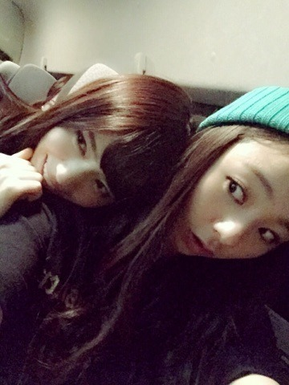

| 2014/11 29 Sat | 紅白ダメでしたね。 。。でも！！！ Rotty |
皆 おつかれさま

ろってぃ−だよ？
先週のNOGIBINGO!3で
私の ぺろぺろが放送されてしまいましたね。。。
あ～ NOGIBINGOスタッフさんは優しいですね。。。嬉しゅうキモチ
最近はお仕事の前に
メンバーと油そばを食べに行ったり
ゴルフの練習をしたり...
あと、らりんと七瀬と3人で映画「神様の言うとおり」を観てきたよ～.＊
ダルマさんが転んだ～（＾ω＾）のやつね。
なんか新しい感じの映画やったよ♪
面白かったよ！
七瀬と車の中で～.＊
車の中 暗いね.＊笑

... 紅白のことなんですが、
やはりファンの皆さん，家族，友達，，沢山の人が楽しみにしてくださっていたので、
出場できなくなって悔しい気持ちもありますが、私の個人的な想いは書かないことにします。
でも、ミュージックステーション スペシャルLIVEに乃木坂46が出演することになりました！！！
本当に嬉しいです（＾ω＾）
2014年 ラストスパートも頑張っていきます！
のし。大好きだよ❤️？
コメント(292)
2014/11/29 20:06